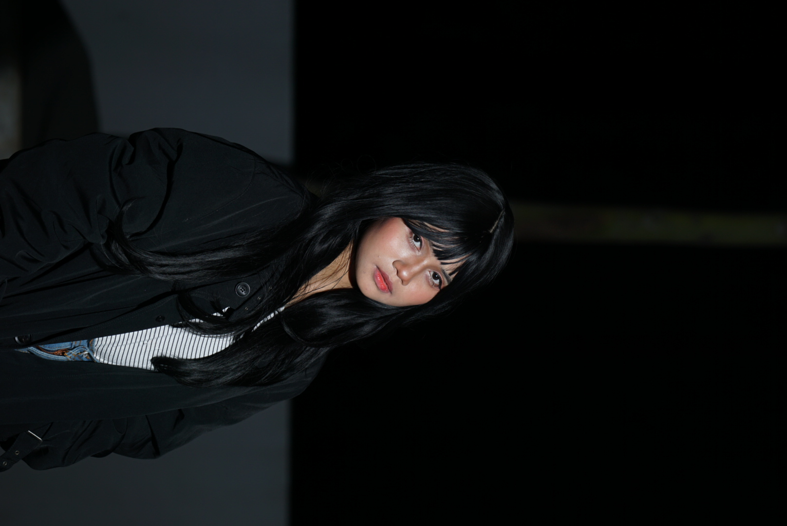
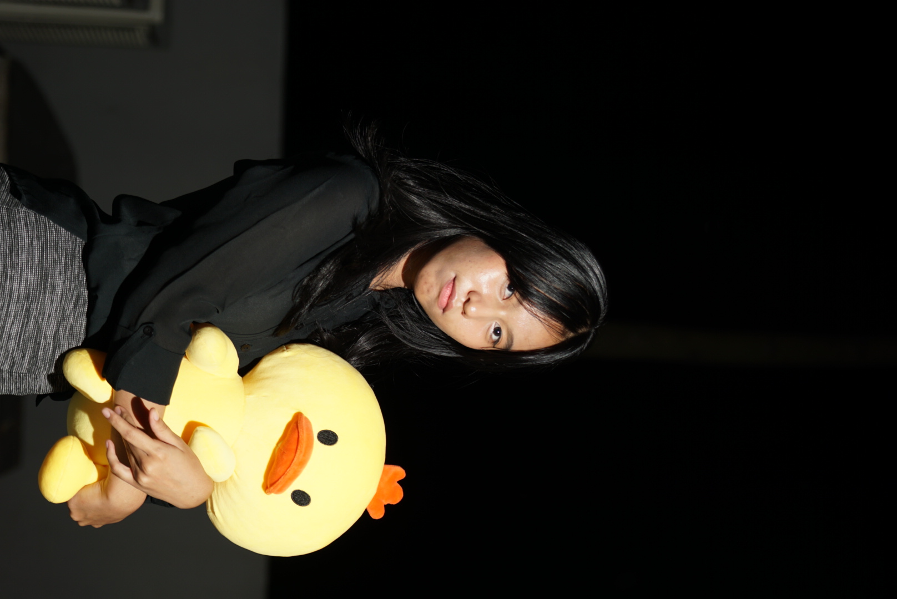
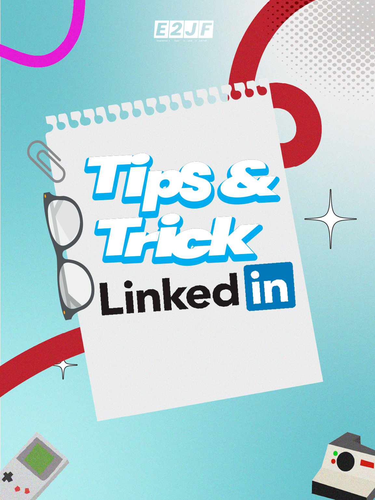
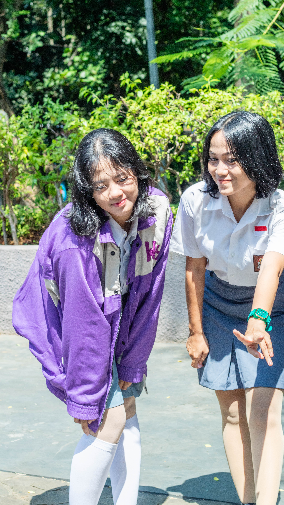
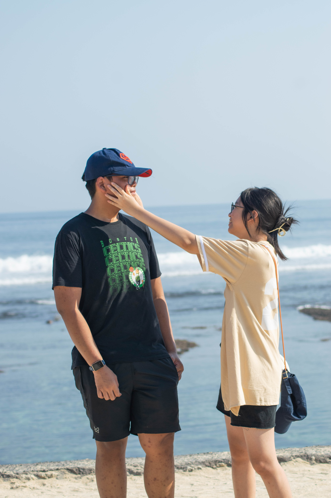
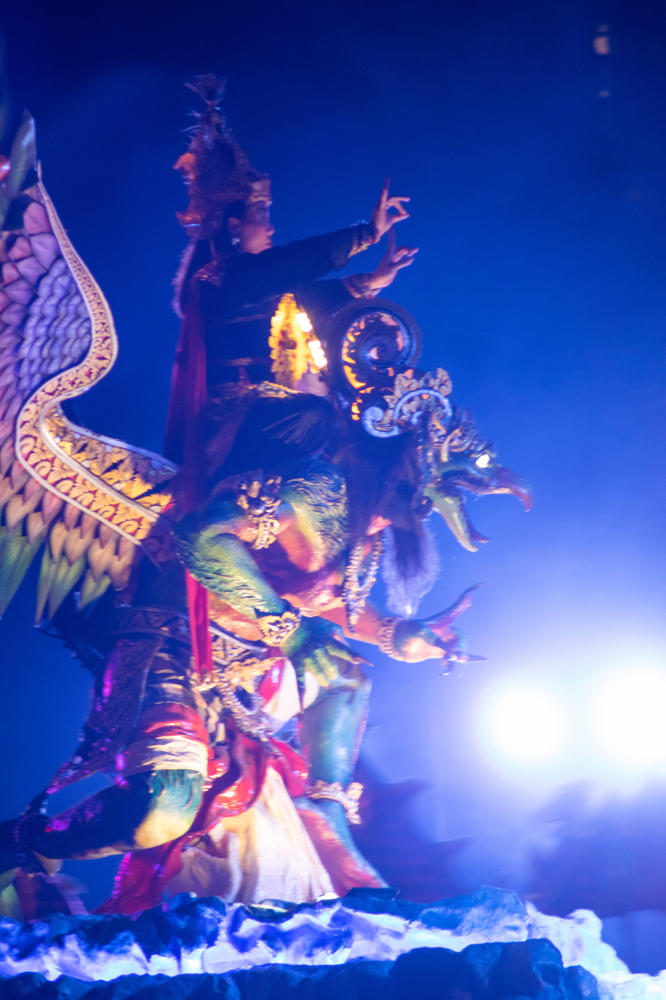
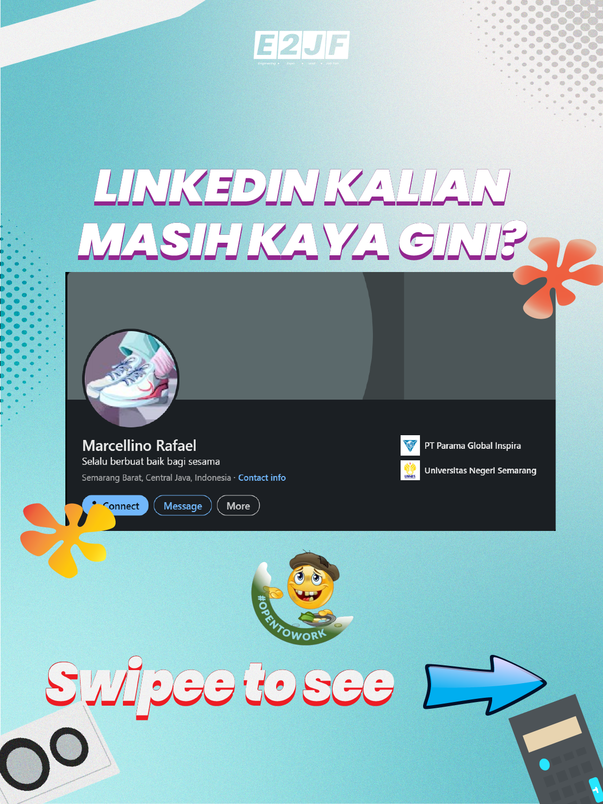

Collection









About Me
I am a dedicated Computer Engineering professional and IT Enthusiast with a strong passion for technology, hardware, and digital innovation. Alongside my technical background, I thrive in the creative space as a photographer, graphic designer, and video editor. This unique blend of analytical engineering skills and visual creativity allows me to build digital solutions that are not only highly functional but also visually compelling.
Contact
Hit me below